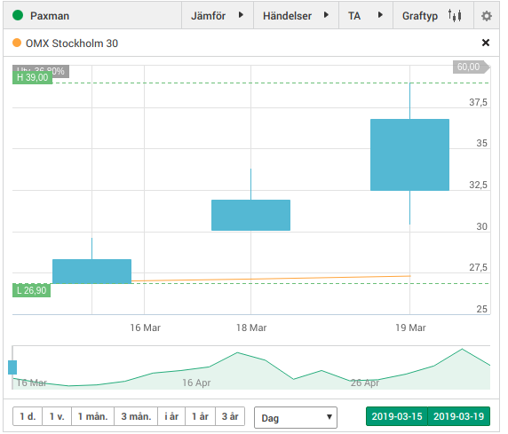

The Data
In total, 297 074 news articles has been gathered from Placera between 2010-01-01 and 2019-03-19, and 120 799 comments from Shareville between . Stock prices has been gathered between 2014-03-24 and 2019-03-20
Stock prices for 675 stock in OMX Stockholm and First North were
gathered from
Nasaq
between 2010-01-01 and 2019-03-19. Using an online lookup for swedish
holidays, each data point is associated with the opening date-time and
the previous closing date-time, adjusted for weekends and holidays.
Furthermore, to keep datapoints independent, values of previous day
was added. It should be noted that these values are not adjusted for splits. An example of datapoints can be seen below:

Preprocessing
Extracting the time
First step of preprocessing has been to extract date-times from the news articles, which was straight forward as the times were part of the scraped html code. Below is the resulting hourly distribution.
Processing the Articles
Next the titles and bodies of each article was separated using the structure of the underlying html. Stop words were removed based on the python library nltk's list of 114 swedish stopwords. The text was split into sentences using the previously mentioned library's method sent_tokenize Then each sentence was turned into word using word_tokenize . Each article was thus turned into a list of sentences which in turn is a list of words, which were all converted to lower case. These words were then subject to filtering using regular expressions. First any website adress was filered out by r'.*\.(com|se|net|org)\$' followed by some commonly occuring files r'.*\.(pdf|aspx|doc|txt)$' Punctuation and digits were also filtered out and finaly any letter not present in the swedish alphabet (such as dashes used for dividers etc. ) was filtered out.
Finally the text was lemmatized. The "snowball-stemmer" found in the nltk-library did not seem to work very well for swedish, a lot of words were wrongly stemmed. Instead, a list of the words in the the so far preprocessed corpus occuring a minimum of 20 times were extracted, which turned out to be 70 617 unique words. A script was set up using SAOL's (Svenska Akademins OrdLista) API and for each word the lemma was saved if it could be uniqely decided and it exsited. This worked out quite well, as 10 021 lemmas for 19 200 words could be assigned (a lot of the original 70 000 words were proper nouns etc, which have no lemma).
In summation,
I Oasmia Pharmaceutical AB (publ) (“Oasmia” eller ”Bolaget”) avhölls i dag extra bolagsstämma. Den extra bolagsstämman var sammankallad på begäran av aktieägare representerande mer än 10 procent av aktierna i Bolaget för att behandla frågan om val av styrelse för Bolaget.
was converted to
[['oasmia', 'pharmaceutical', 'ab', 'publ', 'oasmia', 'bolag', 'avhålla', 'dag', 'extra', 'bolagsstämma'], ['extra', 'bolagsstämma', 'sammankallad', 'begäran', 'aktieägare', 'representera', 'mer', 'procent', 'aktie', 'bolag', 'behandla', 'fråga', 'val', 'styrelse', 'bolag']]
Representation
Word2Vec
To represent the words numerically, a derivation of word2vec called FastText was implemented. In addition to word contexts it includes information about subword n-grams, which in theory should make it more resilient to morphological variation. Each word is represented by a 100-dimensional vector. For visialisation purposes, the resulting 54 484 word-vectors were projected to a two-dimensional space using t-SNE, and the resulting (quite large, it might take some time to load) plot is visible here. The results seem quite promosing, for isntance one can zoom in on a cluster and find that three words very close to each other are "analytikerprognosen", "analytikerprognoserna" and "analytikerprognoserna". That these three are basically the same (made up) word would have been hard to catch using methods such as bag-of-words. Another interesting feature is that these are quite close to the english words "analytical" and "analytics". One can also find the words closest in the sense of geometric distance. For example, the closest words to "vinstvarning" are "vinstvarna", "rapportbesvikelse", "rapportbesvikelser", "rapportbesvikelsen", "varningsflagg", "rapportsläppet", "varningstext", "prognossänkningar", "prognossäkningen" and "kvartalsrapportering".
Performing a singular value decomposition of the wordvectors and plotting the cummulative sum of the singular values we can see that the typical threshold of 90% of singular values are reached at around 84 dimensions. Perhaps one can even try more dimensions.
Bag-of-Words
Model
Data-set
To build the Data-set a method generate_datapoints was created. It generates samples where there is at least one news article present as well as a set of criteria based on the four arguments
- inter-day change: $\frac{\text{open}(d)}{\text{close}(d-1)} -1$
- intra-day change: $ \frac{\text{close}(d)}{\text{open}(d)} -1$
- shadow-tolerance: $ \text{abs}{\left[1-\frac{\text{open}(d)}{\text{low}(d)}\right]} $
- the trading value, which is the volume times the low price.
The listed arguemnts are for the positive samples where the intra-day change is positive, but the method also returns the negative equivalents. For instance, calling generate_datapoints(0.02, 0.02, 0.01, 1e5) results in 1480 'positive' and 1829 'negative' samples. An example of a positive datapoint is the Paxman stock on 2019-03-18 as a result of this article. 